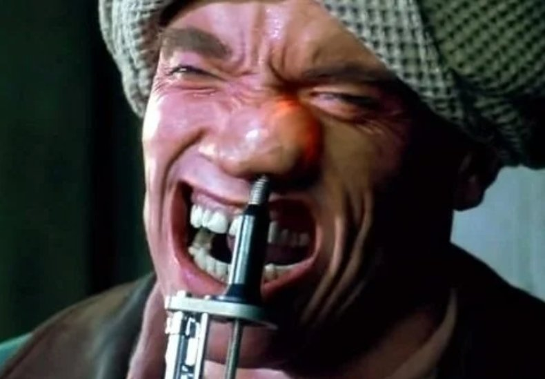

Las 'vacunas' covidianas contienen un nanochip espía que se inyectan sin informar a la gente.Lo dice Bill Gates.-Vídeo-
Pues sí... ese era uno de los motivos del porqué tantísimo interés para que todo el planeta se vacune engañando con la falsificación de estadísticas por muertes del Covid-1984.Vedlo y oídlo vosotros mismos:
QUIEN ES EL CONSPIRADOR AHORA?Microchips en las Vacunas
Además de alterar nuestro ADN como si fuésemos animales, sin nuestro permiso y sin previo debate público filosófico, nos están microchipeando.
Posted On: 2021-02-06T00:00:00
Posted By: Evolucionista
La de moderna o la de pfizer?
He oído que si te ponen la Sputnik ya solo puedes usar Telegram... Que el wasap se te cuelga... ¿Es verdad?
Enviado desde mi POCOPHONE F1 mediante Tapatalk
Posted On: 2021-02-06T00:00:00
Posted By: biolton
vídeo del Ministerio de Sanidad: 'ACTUALMENTE NO HAY NINGUNA VACUNA AUTORIZADA EN EUROPA FRENTE A COVID-19'.Se cubren las espaldas.Estas advertid@.No habrá responsables.Apaga la tele, infórmate y actúa
Pedro Redes video dentro enlace
Posted On: 2021-02-06T00:00:00
Posted By: belenus
En el vídeo esta mezclando los chips RFID (que ya existen desde hace años, con ellos puedes hacer cualquier cosa y son muy similares a los que llevan los móviles), la ID Digital 2020 y las vacunas actuales.No dice expresamente que las vacunas lleven tal nanochip.Lo que esta claro que para un virus no son.
Posted On: 2021-02-06T00:00:00
Posted By: Akira.
biolton dijo: La de moderna o la de pfizer?He oído que si te ponen la Sputnik ya solo puedes usar Telegram... Que el wasap se te cuelga... ¿Es verdad?Enviado desde mi POCOPHONE F1 mediante Tapatalk
Quizá estas no, pero ya estaban allanando el camino en Antena 3 citando un supuesto estudio en donde 8 de cada 10 españoles se podrían una vacuna con chip, literalmente.
Posted On: 2021-02-06T00:00:00
Posted By: ciberobrero
ciberobrero dijo: Quizá estas no, pero ya estaban allanando el camino en Antena 3 citando un supuesto estudio en donde 8 de cada 10 españoles se podrían una vacuna con chip, literalmente.
Yo tengo una duda ....Por qué el chip va siempre unido a la vacuna?No te lo pueden meter en la cerveza o en el café o en el chorizo?
Posted On: 2021-02-06T00:00:00
Posted By: kelden
kelden dijo: Yo tengo una duda ....Por qué el chip va siempre unido a la vacuna?No te lo pueden meter en la cerveza o en el café o en el chorizo?
Directo a la sangre y a los tejidos
Suponiendo que el chip es resistente a los acidos gástricos, tendría el gran problema de la absorción.
Posted On: 2021-02-06T00:00:00
Posted By: ciberobrero
ciberobrero dijo: Directo a la sangre y a los tejidos Suponiendo que el chip es resistente a los acidos gástricos, tendría el gran problema de la absorción.
Eso, para el que hace un chip prodigioso de esas características no es problema.Ya que decis que nos van a a poner un chip hoy por hoy técnicamente imposible, no se porqué le poneis esas limitaciones.Puesto que es imposible fabricar un chip con las propiedades que le atribuis y que haga lo que decis que hace, no acabo de entender las limitaciones absurdas que os inventais.Supongo que lo haces para que os cuadre la magufada ....
Pero bueno ... te voy a seguir el rollo.Con qué vacuna viene el chip?Con todas o solo con algunas?Ten en cuenta que si no aguanta los ácidos gástricos dificilmente va a aguantar 80 grados bajo cero.
Posted On: 2021-02-06T00:00:00
Posted By: kelden
kelden dijo: Eso, para el que hace un chip prodigioso de esas características no es problema.Ya que decis que nos van a a poner un chip hoy por hoy técnicamente imposible, no se porqué le poneis esas limitaciones.Puesto que es imposible fabricar un chip con las propiedades que le atribuis y que haga lo que decis que hace, no acabo de entender las limitaciones absurdas que os inventais.Supongo que lo haces para que os cuadre la magufada ....Pero bueno ... te voy a seguir el rollo.Con qué vacuna viene el chip?Con todas o solo con algunas?Ten en cuenta que si no aguanta los ácidos gástricos dificilmente va a aguantar 80 grados bajo cero.
Ehh mierdecilla Dunning-Kruger, que yo solo te he recordado lo que salió por Antena 3 hace unos meses.
Posted On: 2021-02-06T00:00:00
Posted By: ciberobrero
Mi perro tiene chip.Y esta vacunado.Me hicieron un dos por uno!
He oído que también ponen chip a los hijos de millonarios...Por si los secuestran.

Enviado desde mi POCOPHONE F1 mediante Tapatalk
Posted On: 2021-02-06T00:00:00
Posted By: biolton
Convulsiones de un Vacunado Contra el Covid-19
Posted On: 2021-02-06T00:00:00
Posted By: maxkuiper
kelden dijo: Eso, para el que hace un chip prodigioso de esas características no es problema.Ya que decis que nos van a a poner un chip hoy por hoy técnicamente imposible, no se porqué le poneis esas limitaciones.Puesto que es imposible fabricar un chip con las propiedades que le atribuis y que haga lo que decis que hace, no acabo de entender las limitaciones absurdas que os inventais.Supongo que lo haces para que os cuadre la magufada ....Pero bueno ... te voy a seguir el rollo.Con qué vacuna viene el chip?Con todas o solo con algunas?Ten en cuenta que si no aguanta los ácidos gástricos dificilmente va a aguantar 80 grados bajo cero.
Posted On: 2021-02-17T00:00:00
Posted By: Kadashman-Enlil I
Yo no creo que sea un MicroChip.Creo que es ADN extraterrestre.De aki 2 años, no habrá humanos...
Posted On: 2021-02-17T00:00:00
Posted By: NiNi Ni Rojos Ni Grises
Evolucionista dijo: Pues sí... ese era uno de los motivos del porqué tantísimo interés para que todo el planeta se vacune engañando con la falsificación de estadísticas por muertes del Covid-1984.Vedlo y oídlo vosotros mismos: QUIEN ES EL CONSPIRADOR AHORA?Microchips en las Vacunas Además de alterar nuestro ADN como si fuésemos animales, sin nuestro permiso y sin previo debate público filosófico, nos están microchipeando.
Ese vídeo parece que usa deep fake, apesta a falso, calidad malísima, continuos cortes y la voz puede ser de un imitador.
Posted On: 2021-02-17T00:00:00
Posted By: Rextor
Y desde windows 8,1 es una troleada.
Posted On: 2021-02-17T00:00:00
Posted By: emos_sio_engañás
Content Date: 2021-02-06
Download Date: 2021-05-30
Document ID: L0C04CK1G